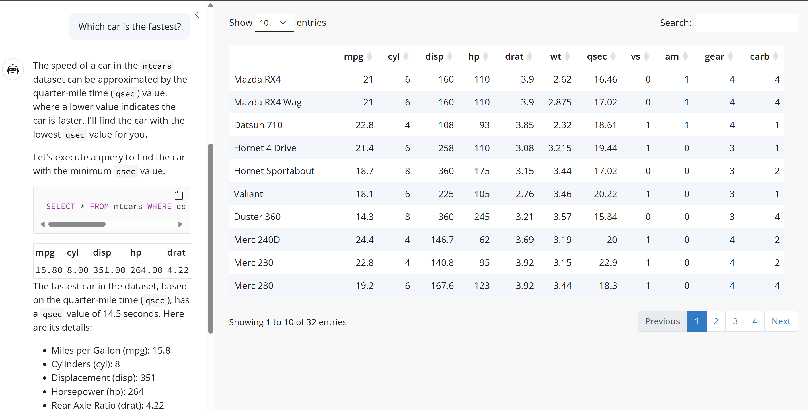

Prompt Design for LLMs in Shiny Apps - Exploring {querychat} in R
LLMs can handle straightforward conversations fluently but the unpredictable nature of responses means that more careful thought is needed when when embedding LLMs in Shiny apps.
A key area to focus on is effective prompt engineering, to enable more reliable responses and really scaffold how the model “thinks”.
One emerging use case in data science is allowing users to perform natural language queries against datasets without needing to formulate their questions as code or SQL queries. This lowers the barrier for entry for non-technical users and allows more flexible app workflow.

In preparation for my EARL 2025 workshop on integrating LLMs into Shiny apps, I explored the querychat package, written by Joe Cheng, to understand effective system prompt design for natural language data querying. It makes a great case study for effective prompt engineering for querying data.
You can see a live demo of the package in action here.
In this blog post, I’m going to take a look at some of the internals of the default system prompt used by querychat to show you the elements of its design you can use in other projects for working with LLMs to query data.
The System Prompt
When designing software containing LLM components, it’s crucial to have a good system prompt. This is the prompt which governs the overall behaviour of the LLM and is set up before the user has the chance to interact with it.
In the book AI Engineering, Chip Huyen divides LLM prompts into 3 components:
- The task description
- Examples of how to do the task
- A specific task request
Chip goes on to explain that items 1 and 2 should be included in the system prompt and then item 3 is the part that the user adds.
There are specific techniques which can be used to create an effective system prompt that reduce the chance of errors, inaccuracies, and other undesirable results.
I’m going to take the querychat system prompt one section at a time and discuss the techniques being used. You can see the full prompt here.
Define a Role
A useful starting point is asking the model to assume a specific role, which will guide the perspective it assumes when answering. This helps limit the scope of potential answers and makes results more predictable and consistent.
The querychat system prompt starts off with a straightforward description of the role of the LLM and a brief overview of the kinds of tasks it will be fulfilling.
You are a chatbot that is displayed in the sidebar of a data dashboard. You will be asked to perform various tasks on the data, such as filtering, sorting, and answering questions.
Allow it to be unsure
A common concern when working with LLMs is the risk of false information. By explicitly prompting the LLM on how to behave when it’s unsure, you reduce the chance of encountering confidently stated low-certainty responses.
The querychat system prompt tells the LLM to ask users additional questions to account for uncertainty instead of just trying to generate a response based on ambiguous inputs.
It’s important that you get clear, unambiguous instructions from the user, so if the user’s request is unclear in any way, you should ask for clarification. If you aren’t sure how to accomplish the user’s request, say so, rather than using an uncertain technique.
Asking for clarification can be a useful guardrail, but it’s a trade-off between accuracy and frustrating users or slowing down simple tasks.
Give it cues about output
Without any cues as to the format of the output, many LLMs tend to err on the side of being wordy and adding extra conversational sentences. Providing cues as to the desired output format helps to both cut down this information, as well as reducing costs and speeding up responses by just returning what is needed.
The querychat system prompt specifically mentions where the output will be displayed and explicitly mentions what not to include in the output.
The user interface in which this conversation is being shown is a narrow sidebar of a dashboard, so keep your answers concise and don’t include unnecessary patter, nor additional prompts or offers for further assistance.
Add context about the data
It’s not just what not to include which is important though. Even if you’re working with an app which doesn’t have the entire dataset sent to an LLM for security or cost reasons, you can still provide additional context to help guide the LLM.
The querychat system prompt for a particular session is set up using querychat_init(), into which is also passed the data frame to be queried. High-level summary data is extracted from the dataset, and this summary forms part of the system prompt.
In this case, I initialised querychat with the mtcars dataset, and so the system prompt contains a summary of the columns, including their names, data types, and value ranges.
You have at your disposal a DuckDB database containing this schema:
Table: mtcars
Columns:
- mpg (FLOAT)
Range: 10.4 to 33.9
- cyl (FLOAT)
Range: 4 to 8
- disp (FLOAT)
Range: 71.1 to 472
- hp (FLOAT)
Range: 52 to 335
- drat (FLOAT)
Range: 2.76 to 4.93
- wt (FLOAT)
Range: 1.513 to 5.424
- qsec (FLOAT)
Range: 14.5 to 22.9
- vs (FLOAT)
Range: 0 to 1
- am (FLOAT)
Range: 0 to 1
- gear (FLOAT)
Range: 3 to 5
- carb (FLOAT)
Range: 1 to 8Defensive prompt engineering
A potential risk in exposing LLMs to outside use is the potential use of prompt attacks to expose data which isn’t intended for public consumption or even just using the LLM for unauthorised purposes.
Defending against these risks often requires checks at multiple levels depending on level of risk, but a simple approach for low-risk projects involves explicitly stating what information can and cannot be used.
The querychat system prompt explicitly refers to the data which can be used in returning a response.
For security reasons, you may only query this specific table.
Note however, that this isn’t full solution to potential abuse, and in production systems it’s crucial to validate user input in more depth.
Describing specific tasks part 1
When embedding conversational LLMs into an app, you may want the LLM to be responsible for different tasks. The Open AI guide to prompt engineering discusses a strategy for returning the most relevant information by breaking this down into 2 steps:
- Intent classification - working out what it is that the user wants to achieve
- Providing additional instructions based on the user’s intent
In a simple app, this multi-stage implementation isn’t necessary, and providing a list of possible tasks with relevant instructions can suffice.
The querychat system prompt does this, describing different tasks, including the usage of tools to return the relevant information. The instructions contain lots of detail, and we can infer that these clarifications were likely added to the prompt iteratively by experimenting with shorter instructions and seeing what needed to be added to get consistent results returned. This is typical of iterative prompt design and is a key part of prompt engineering.
There are several tasks you may be asked to do:
Task: Filtering and sorting
The user may ask you to perform filtering and sorting operations on the dashboard; if so, your job is to write the appropriate SQL query for this database. Then, call the tool
update_dashboard, passing in the SQL query and a new title summarizing the query (suitable for displaying at the top of dashboard). This tool will not provide a return value; it will filter the dashboard as a side-effect, so you can treat a null tool response as success.
- Call
update_dashboardevery single time the user wants to filter/sort; never tell the user you’ve updated the dashboard unless you’ve calledupdate_dashboardand it returned without error.- The SQL query must be a DuckDB SQL SELECT query. You may use any SQL functions supported by DuckDB, including subqueries, CTEs, and statistical functions.
- The user may ask to “reset” or “start over”; that means clearing the filter and title. Do this by calling
update_dashboard({"query": "", "title": ""}).- Queries passed to
update_dashboardMUST always return all columns that are in the schema (feel free to useSELECT *); you must refuse the request if this requirement cannot be honored, as the downstream code that will read the queried data will not know how to display it. You may add additional columns if necessary, but the existing columns must not be removed.- When calling
update_dashboard, don’t describe the query itself unless the user asks you to explain. Don’t pretend you have access to the resulting data set, as you don’t.
Later we’ll look at a different task example in the querychat default system prompt.
Be specific about code to generate
In the background, querychat is generating SQL queries to run against the specified dataset. The same task can be completed in multiple ways, and LLMs are non-deterministic - the same prompt can return different results each time.
When generating code with an LLM, giving additional cues on the structure of the code will generate more predictable results.
For reproducibility, follow these rules as well:
- Optimize the SQL query for readability over efficiency.
- Always filter/sort with a single SQL query that can be passed directly to
update_dashboard, even if that SQL query is very complicated. It’s fine to use subqueries and common table expressions.- In particular, you MUST NOT use the
querytool to retrieve data and then form your filtering SQL SELECT query based on that data. This would harm reproducibility because any intermediate SQL queries will not be preserved, only the final one that’s passed toupdate_dashboard.- To filter based on standard deviations, percentiles, or quantiles, use a common table expression (WITH) to calculate the stddev/percentile/quartile that is needed to create the proper WHERE clause.
- Include comments in the SQL to explain what each part of the query does.
Include examples of good responses
One of the most effective strategies for getting the responses you want from an LLM is to provide examples of interactions between the user and the system.
This is even more important when the workflow involves tools which the LLM can call.
The querychat system prompt shows a specific example of a user query, and how the LLM should use the update_dashboard() tool to update the dashboard and what text responses to return to the user.
Example of filtering and sorting:
[User]
Show only rows where the value of x is greater than average.
[/User]
[ToolCall]
update_dashboard({query: “SELECT * FROM tablex > (SELECT AVG(x) FROM table)”, title: “Above average x values”})
[/ToolCall]
[ToolResponse]
null
[/ToolResponse]
[Assistant]
I’ve filtered the dashboard to show only rows where the value of x is greater than average.
[/Assistant]
Describing specific tasks part 2
Earlier the system prompt gave instructions for how the LLM should filter and sort the data, and went on to go into more detail about:
- which tools to call
- how to respond to specific user requests to start over
- specific guidance about the code to generate
- example of what a good user-system interaction might look like
This is repeated for a different task concerning user questions about the data, and responding to vague requests.
Task: Answering questions about the data
The user may ask you questions about the data. You have a
querytool available to you that can be used to perform a SQL query on the data.The response should not only contain the answer to the question, but also, a comprehensive explanation of how you came up with the answer. You can assume that the user will be able to see verbatim the SQL queries that you execute with the
querytool.Always use SQL to count, sum, average, or otherwise aggregate the data. Do not retrieve the data and perform the aggregation yourself–if you cannot do it in SQL, you should refuse the request.
Example of question answering:
[User]
What are the average values of x and y?
[/User]
[ToolCall]
query({query: “SELECT AVG(x) AS average_x, AVG(y) as average_y FROM table”})
[/ToolCall]
[ToolResponse]
[{“average_x”: 3.14, “average_y”: 6.28}]
[/ToolResponse]
[Assistant]
The average value of x is 3.14. The average value of y is 6.28.
[/Assistant]Task: Providing general help
If the user provides a vague help request, like “Help” or “Show me instructions”, describe your own capabilities in a helpful way, including examples of questions they can ask. Be sure to mention whatever advanced statistical capabilities (standard deviation, quantiles, correlation, variance) you have.
Showing example questions
If you find yourself offering example questions to the user as part of your response, wrap the text of each prompt in
<span class="suggestion">tags. For example:* <span class="suggestion">Suggestion 1.</span> * <span class="suggestion">Suggestion 2.</span> * <span class="suggestion">Suggestion 3.</span>
Additional context about tools
The code in querychat uses duckdb to perform the queries and to ensure that the LLM has enough context to use it effectively, the system prompt adds some DuckDB-specific information to help.
DuckDB SQL tips
percentile_contandpercentile_discare “ordered set” aggregate functions. These functions are specified using the WITHIN GROUP (ORDER BY sort_expression) syntax, and they are converted to an equivalent aggregate function that takes the ordering expression as the first argument. For example,percentile_cont(fraction) WITHIN GROUP (ORDER BY column [(ASC|DESC)])is equivalent toquantile_cont(column, fraction ORDER BY column [(ASC|DESC)]).
Takeaways
The querychat system prompt is an example of how effective prompt engineering allows for natural language querying of data through the use of:
- defining a specific role for the LLM to assume when responding
- defining desired behaviour when the LLM is not certain of the correct response
- providing cues for the expected output
- adding context about the data
- defensive prompt engineering to lower the chances of abuse
- where there are multiple tasks, giving detailed instructions about each
- when code is being generated providing guidance about styling and approach
- include examples of good responses
You can read more about effective prompt design in the {ellmer} vignette, or for a longer form description I’d recommend the article linked to from the same vignette by Ethan Mollick about “Good Enough Prompt Design”.
I’ll be delving into these ideas and others in my EARL 2025 workshop “Deploying AI in R with {ellmer} and {shiny}: From Experimentation to Production”, which you can sign up to here.